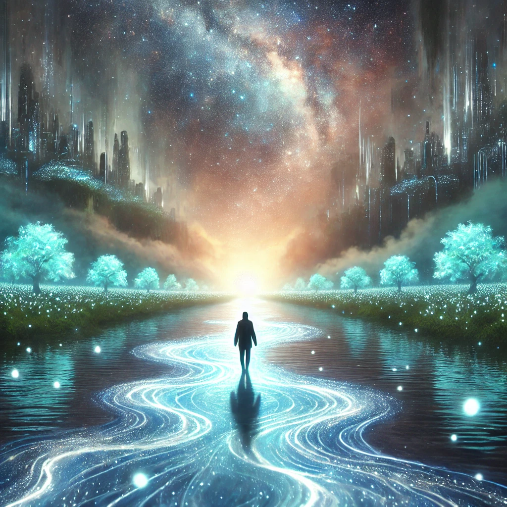

The river of light flows endlessly before you, winding its way through the surreal dreamscape of floating cities and bioluminescent jungles. The compass in your hand vibrates, urging you to release control. You take a step into the glowing waters, and a sense of warmth envelops you.
The current pulls you forward—not forcefully, but gently, as though it already knows where you are meant to go. You close your eyes and let go, trusting the flow to guide you. The waters seem alive, whispering truths you can almost grasp.
A voice, soft yet infinite, echoes through your mind:
“To resist is to suffer. To flow is to awaken. The current carries you not where you want to go, but where you need to be.”
The scenery around you begins to shift as the current takes you deeper into its embrace. You feel a profound sense of connection to the flow of life, the Wu-Wei—the effortless action.

What will you do as the current carries you?